This project helps new customers onboard to QuickBooks Online through Expert-Assisted experiences. While the broader onboarding ecosystem includes both AI-driven and expert-assisted experiences, this case study focuses specifically on onboarding with human expertise.
The goal is to reduce setup friction and help customers achieve QuickBook’s value faster by guiding them through key onboarding steps. For example, outcomes would look like running financial reports, getting paid from customers faster, preventing missed or late bill payments.
Business outcome
QuickBooks Online has a lot to offer, but is hard to use especially as a new customer. The subscription is high and it takes a lot of time and effort to fully utilize the tool and streamline for businesses.
Problem statement
Once customer completes 4 core jobs in QuickBooks
Why 4?
Customers who complete 4+ setup tasks across Accounting, Sales, Expenses, Reports and Customer Hub have +9 pt QBO retention at 92 days VS customers completing 1 or fewer tasks.
Launch a series of bold experiments to close the gap of 8% to 30% by the end of FY27.
What did I do?
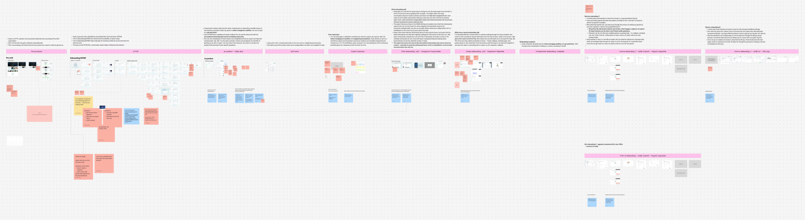
blahblahblah
Onboarding durable access point
Ideate with AI, understand marketing messaging position, research Expert attributes, run generative research via Usertesting.com
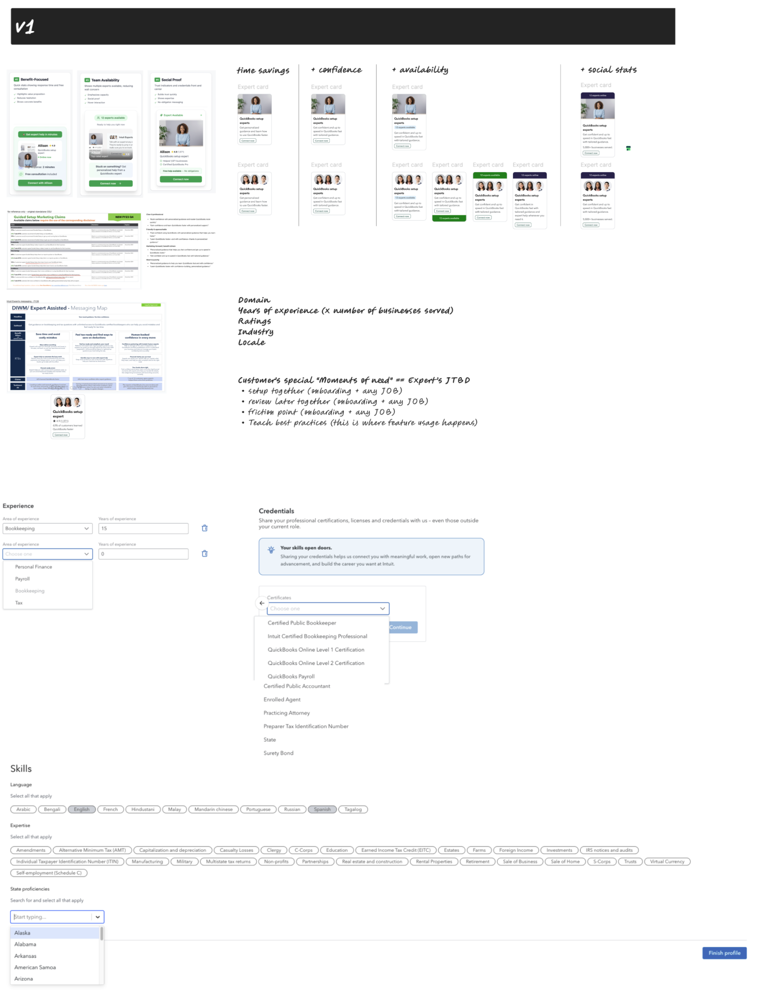
Research
Ideate with AI, understand marketing messaging position, research Expert attributes, run generative research via Usertesting.com
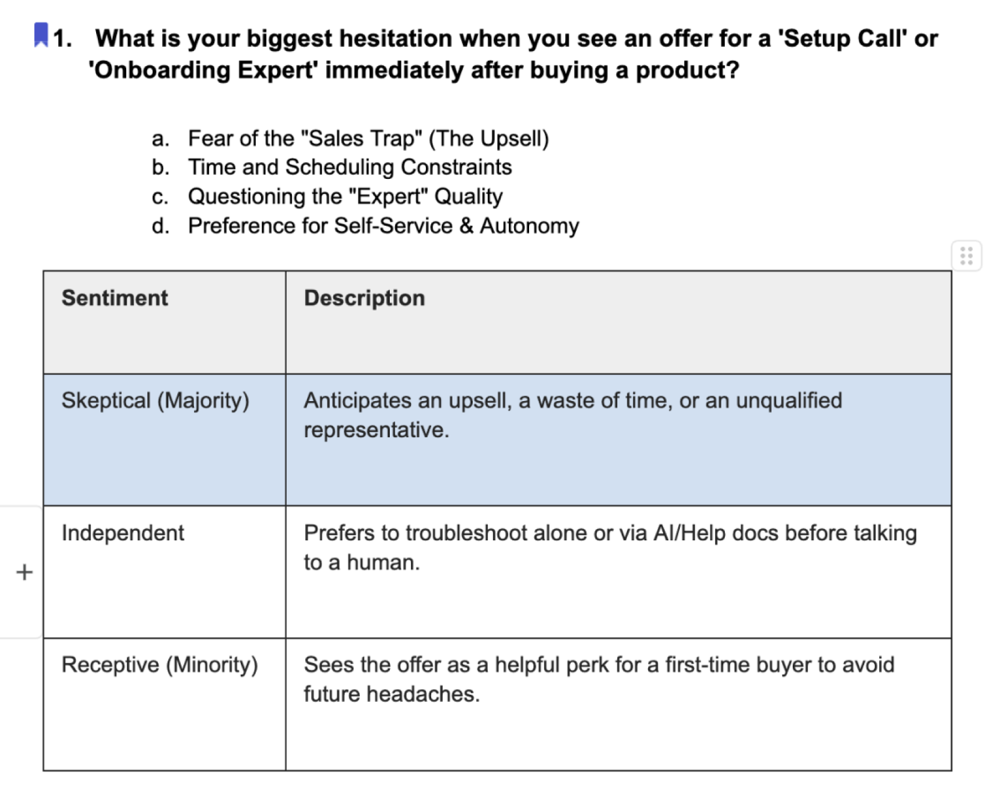
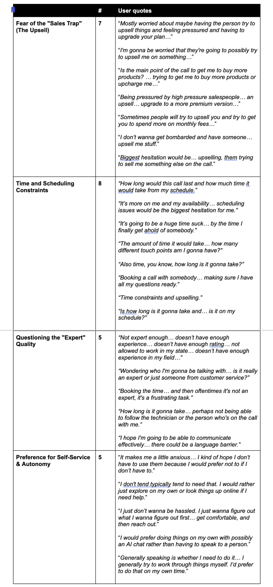
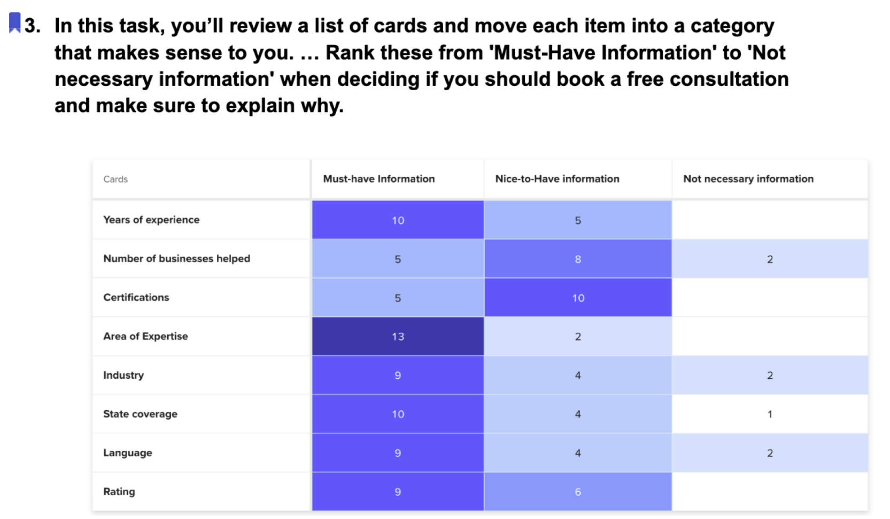
Onboarding durable access point
Ideate with AI, understand marketing messaging position, research Expert attributes, run generative research via Usertesting.com
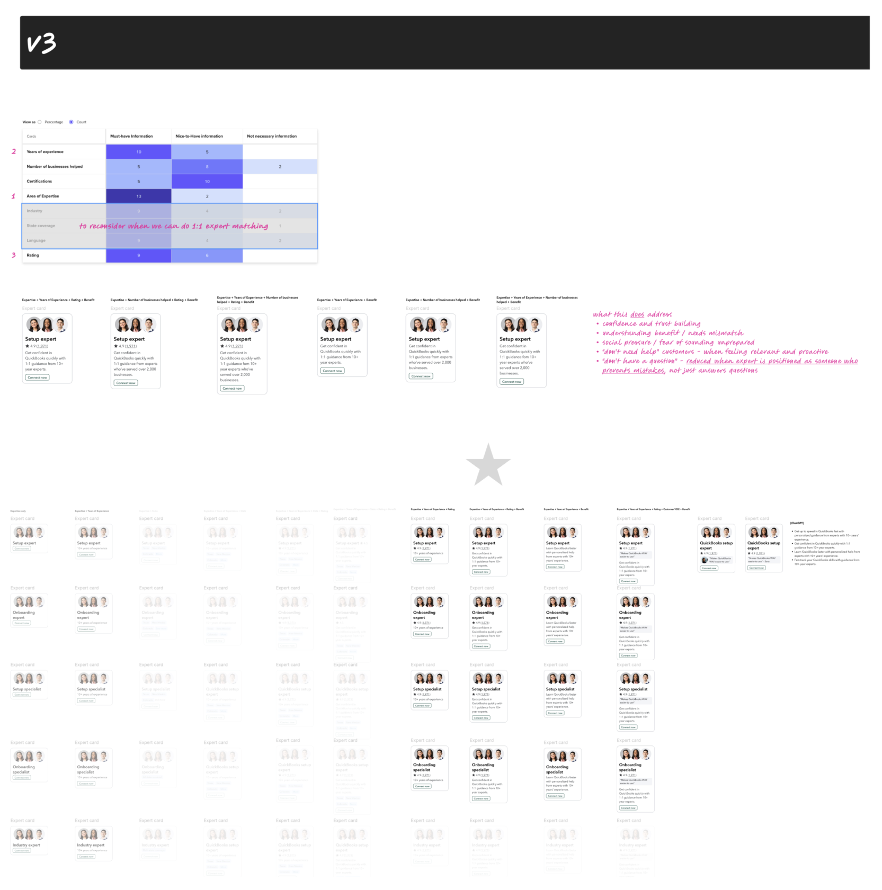
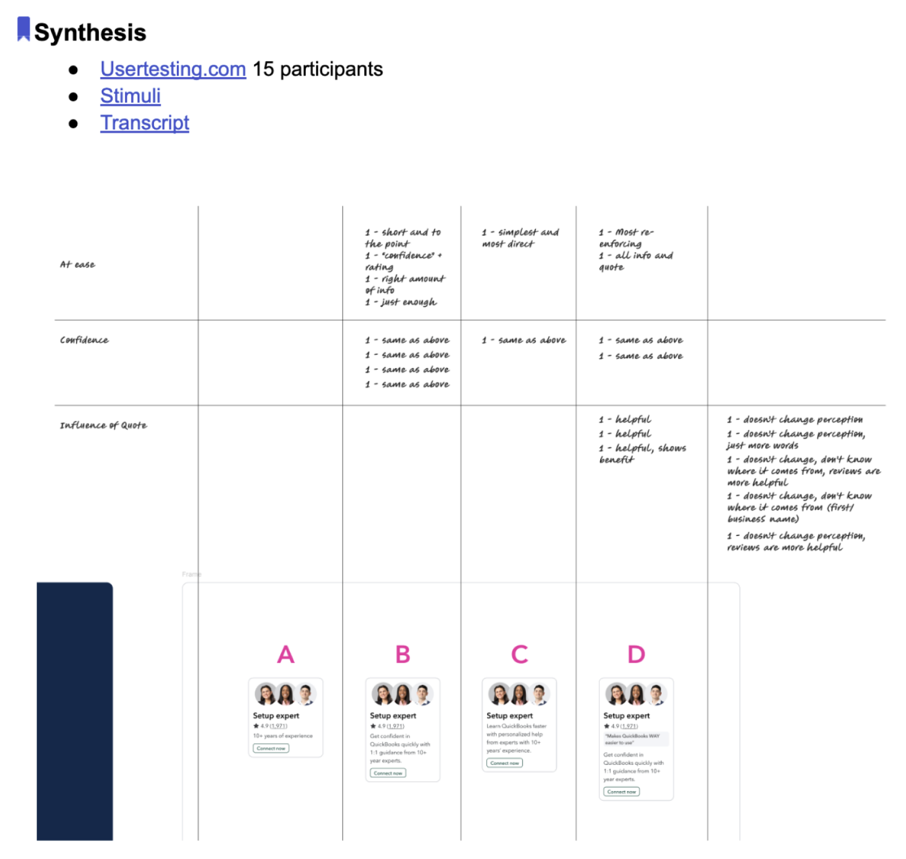
Onboarding durable access point
Ideate with AI, understand marketing messaging position, research Expert attributes, run generative research via Usertesting.com
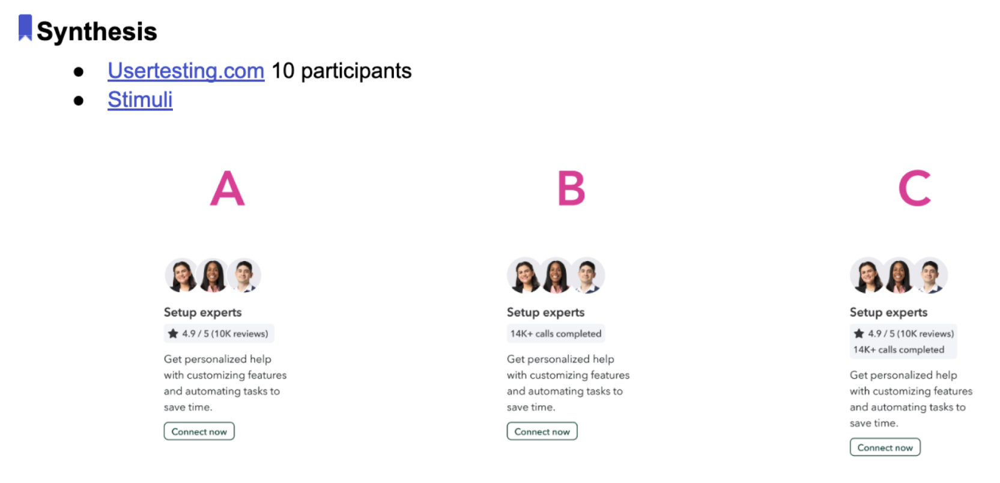
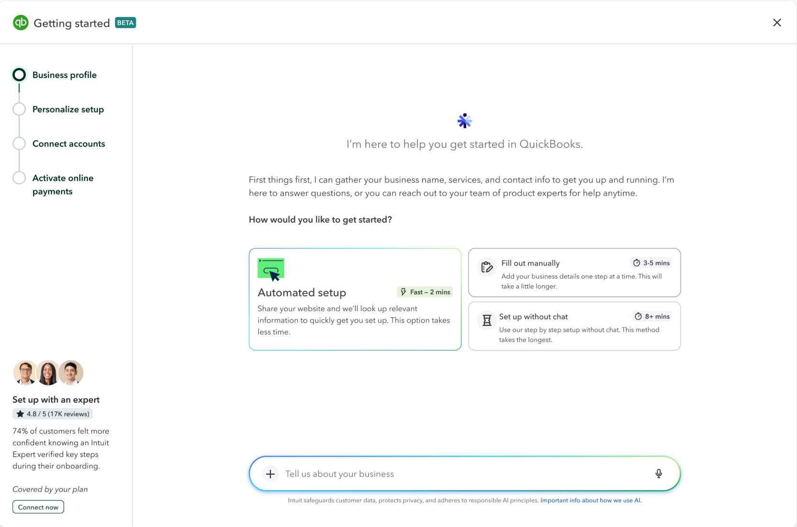
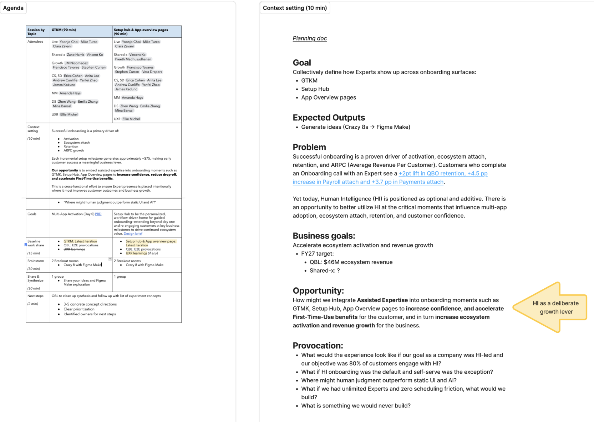
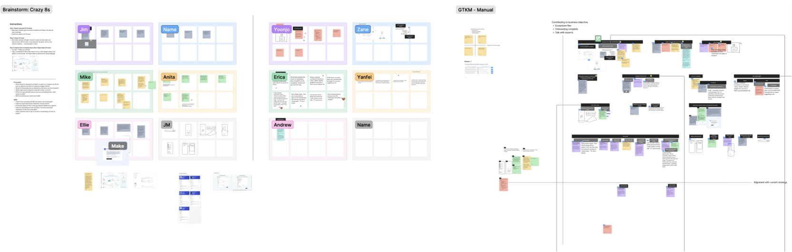
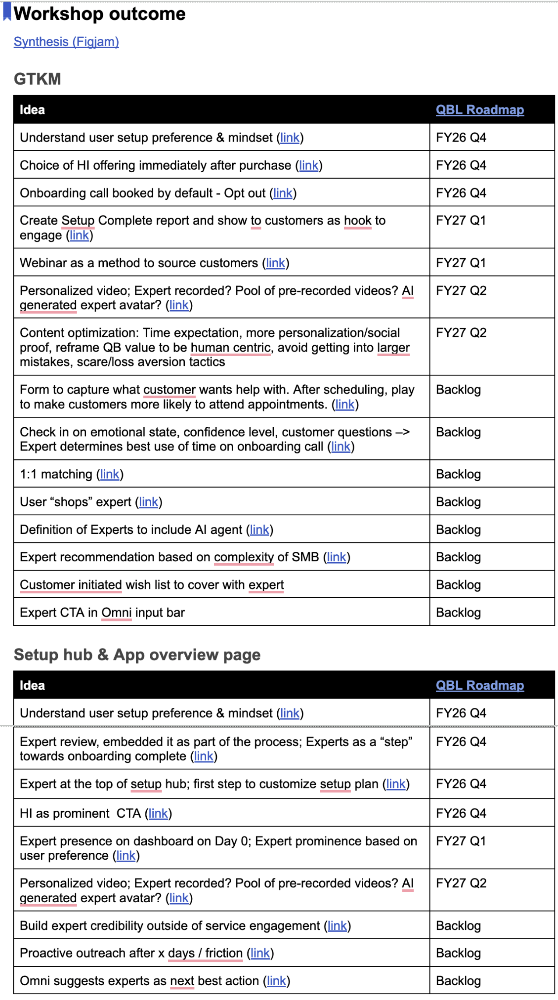
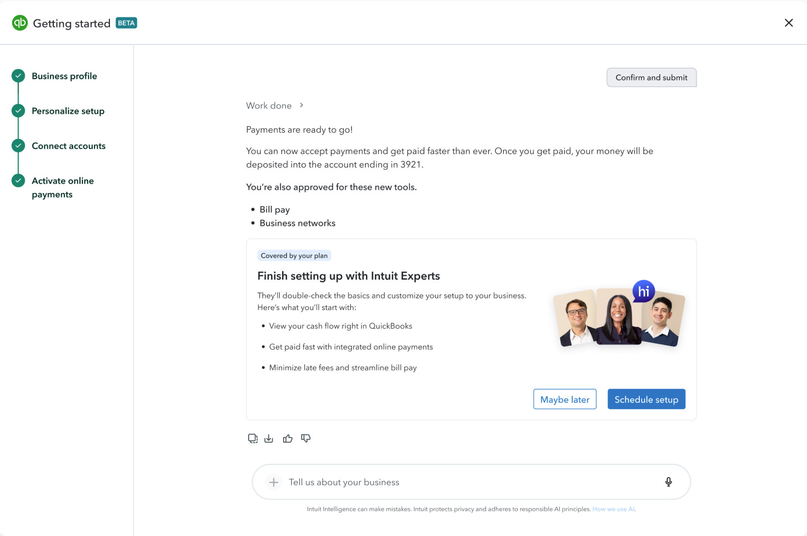
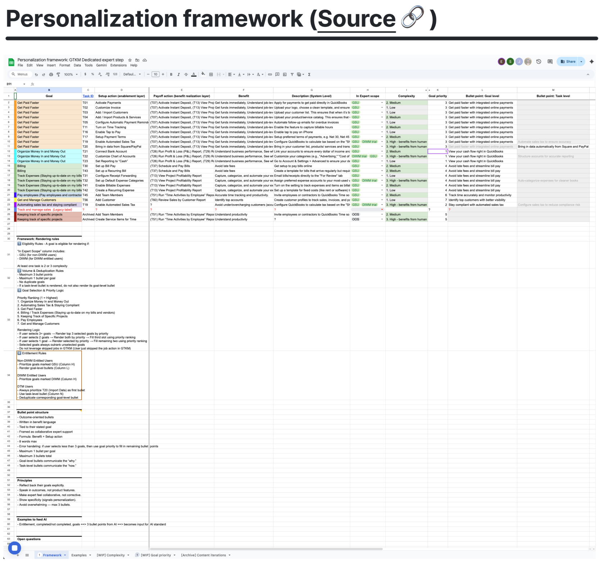
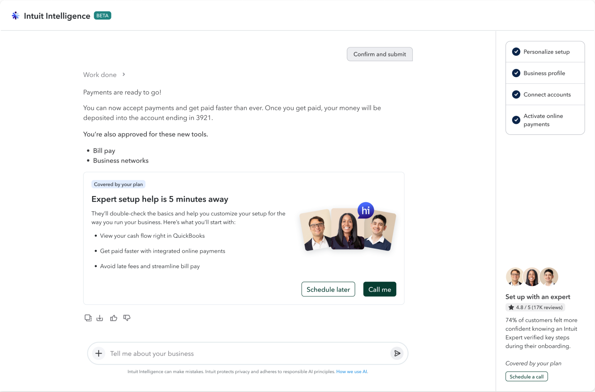